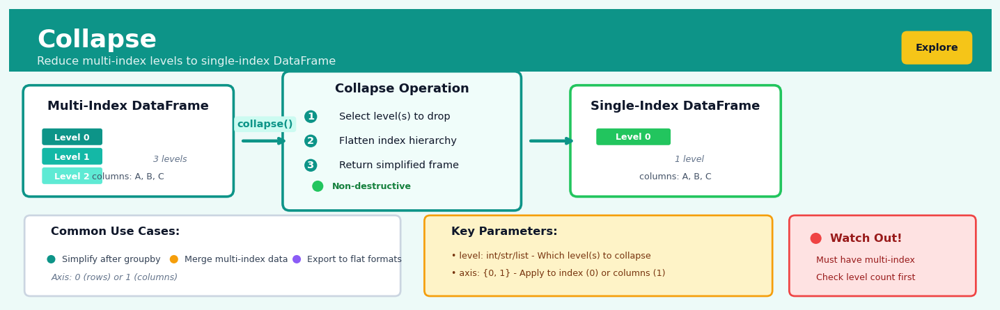
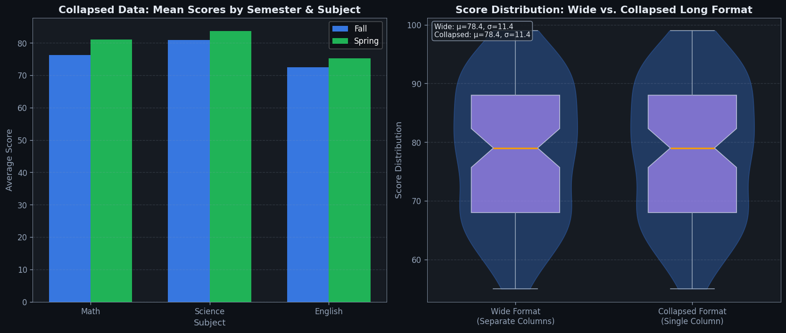
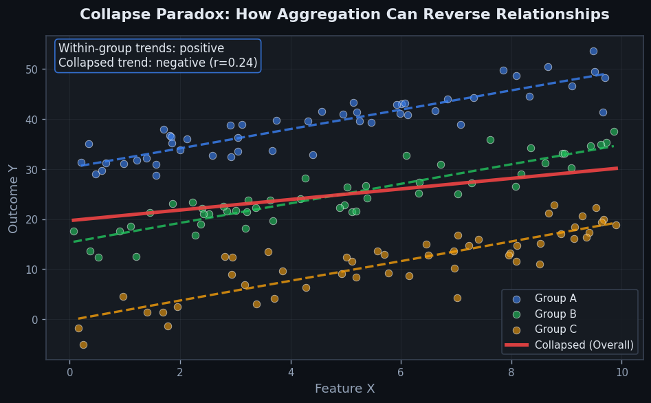

Collapse#


Collapse is a core transformation in the Explore workflow.
The 60-Second Version#
What it does: Collapse turns detailed rows into summary totals by grouping similar records together and calculating aggregates like sums, averages, or counts.
When to use it: You have transaction-level or granular data but need to answer questions at a higher level—sales by region, average response time by department, or customer count by segment.
What you get back: A shorter table with one row per group showing the calculated summaries, ready to present in reports, dashboards, or as input for further analysis.
At a Glance
Difficulty |
Easy |
Typical runtime |
Seconds on 100K rows |
What you bring |
A dataset with grouping variables and numeric/categorical columns to aggregate |
What you get |
A summary table with one row per unique group combination |
Heuristix bucket |
Explore — Shaping & Transforming Data |
You’re making irreversible decisions about what to keep and what to discard—once you collapse to monthly averages, you can’t recover daily patterns.
Learning Objectives#
After reading this chapter, a business user will be able to:
Identify situations where collapsing data will answer business questions, such as calculating regional sales totals, average customer purchase values, or monthly transaction counts across product categories.
Read and explain collapsed data tables to stakeholders, describing what each summary statistic represents, which groups are being compared, and what the numbers reveal about business performance.
Decide which level of aggregation (daily, monthly, by region, by customer segment) best supports specific decisions like resource allocation, performance evaluation, or trend identification.
After reading this chapter, a data scientist will be able to:
Implement collapse operations that correctly handle missing values, preserve appropriate data types, and apply multiple aggregation functions simultaneously across different column groups.
Select optimal grouping variables and aggregation functions by weighing trade-offs between granularity and statistical reliability, computational cost, and interpretability for downstream analysis.
Validate collapsed results by checking for unexpected group counts, identifying when aggregations produce misleading statistics (such as means dominated by outliers), and diagnosing why groups may be missing or duplicated.
Overview#
Collapse (also known as aggregation or summarisation) is a fundamental data transformation operation that reduces a dataset by combining multiple rows into summary statistics over grouping variables. It belongs to the family of reshaping and aggregation methods central to data wrangling and exploratory analysis. The operation applies one or more aggregation functions—such as sum, mean, count, or custom functions—to numeric or categorical columns within groups defined by one or more key variables, producing a new dataset with one row per unique group.
When to Use This#
Use Collapse when you need to:
Aggregate transactional data to customer-level summaries — When your source data contains one row per transaction but your analysis requires customer-level features such as total spend, average basket size, or purchase frequency.
Prepare time-series data at a different temporal granularity — When daily data must be rolled up to weekly, monthly, or quarterly summaries for trend analysis or forecasting at a coarser resolution.
Create group-level features for machine learning — When building predictive models that require aggregated features such as “average claim amount per policyholder” or “total logins per user in the last 30 days.”
Summarise survey or experimental results by segment — When analysing A/B test outcomes or survey responses grouped by treatment arm, demographic segment, or geographic region.
Reduce data volume before joining to reference tables — When a large fact table must be summarised before merging with a smaller dimension table to avoid Cartesian explosion.
Generate management reports and KPIs — When business stakeholders require summary metrics such as total revenue by region, average processing time by department, or defect rates by product line.
Validate data quality through count checks — When checking for expected record counts per group to detect missing data, duplicates, or upstream pipeline failures.
Do NOT use Collapse when:
You need row-level predictions or transformations — If the goal is to apply a model or transformation to each row individually, aggregation will destroy the granularity you need.
The grouping variable has excessive cardinality — If every row has a unique key (e.g., a UUID with no repeats), collapse produces a dataset identical in size to the input and adds no value.
You require window functions rather than full aggregation — If you need running totals, rankings, or lagged values that retain all original rows, use windowed transformations instead.
Questions This Answers#
Performance & Trends#
How much revenue did each sales rep bring in last quarter, and who’s in the top 10%?
What’s our average deal size by industry vertical, and which segments are growing?
How many support tickets are we getting per product line each week, and is that number going up?
Which store locations are hitting their monthly targets and which ones have missed three months in a row?
What’s our customer retention rate across different subscription tiers this year versus last year?
How much are we spending on marketing per channel each month, and what’s the cost per acquisition for each?
Operational Decisions#
If we look at average delivery times by carrier and region, who should we renegotiate contracts with?
Which product categories have the highest return rates, and should we stop carrying certain SKUs?
What’s the average time-to-close for deals by lead source — should we shift budget away from webinars?
How many customer service interactions does each client segment generate per month, and where should we add headcount?
Which manufacturing lines have the most downtime by shift, and do we need to adjust scheduling?
Comparative Analysis#
Are our New York stores outperforming Chicago on a per-square-foot basis, and by how much?
What’s the conversion rate for email campaigns versus social ads across our customer age groups?
Which quarter typically brings in the most revenue by product category, and how should that inform our inventory planning for Q4?
How It Works#
Imagine you’re a regional sales director who receives daily sales reports from twenty stores, each sending you a spreadsheet with hundreds of individual transactions—every coffee sold, every sandwich purchased, with timestamps and prices. You can’t possibly review thousands of line items, so you ask each store manager to send you just three numbers instead: total sales, transaction count, and average purchase size. Suddenly, twenty stores become twenty single rows you can scan in seconds. You’ve collapsed detailed transaction data into meaningful summaries grouped by store, transforming an overwhelming flood of information into actionable insight.
BEFORE: Transaction-level data (12 rows)
┌────────┬────────────┬────────┐
│ Store │ Product │ Amount │
├────────┼────────────┼────────┤
│ North │ Coffee │ 4.50 │
│ North │ Sandwich │ 8.00 │
│ North │ Coffee │ 4.50 │
│ South │ Coffee │ 4.50 │
│ South │ Pastry │ 3.50 │
│ South │ Coffee │ 4.50 │
│ West │ Sandwich │ 8.00 │
│ West │ Coffee │ 4.50 │
└────────┴────────────┴────────┘
↓ COLLAPSE by Store
↓ (sum Amount, count rows)
AFTER: Store-level summaries (3 rows)
┌────────┬──────────────┬─────────────┐
│ Store │ Total_Sales │ Num_Orders │
├────────┼──────────────┼─────────────┤
│ North │ 17.00 │ 3 │
│ South │ 12.50 │ 2 │
│ West │ 12.50 │ 2 │
└────────┴──────────────┴─────────────┘
Identify the grouping variables. Collapse begins by determining which columns define your groups—the categories you want to summarize by. In our sales example, “Store” is the grouping variable. These are typically categorical fields like region, product type, customer segment, or date. You’re essentially asking: “What are the natural buckets I want to organize my data into?”
Sort and partition the data into groups. The operation scans through your dataset and organizes all rows sharing the same grouping value together. All “North” transactions cluster together, all “South” transactions form another cluster, and so on. Think of it like sorting a deck of cards by suit—suddenly all the hearts are together, all the spades are together.
Apply aggregation functions within each group. For each cluster, collapse calculates the summary statistics you’ve requested. If you asked for sum, it adds up all the values in that group. If you asked for average, it computes the mean. If you asked for count, it simply tallies how many rows exist in that group. Each group is processed independently and in parallel.
Create one output row per group. The result is a dramatically smaller dataset where each unique combination of grouping variables becomes exactly one row. Those three hundred North store transactions compress into a single summary row. The collapsed dataset preserves your grouping columns and adds new columns containing the calculated summaries.
The key insight: Collapse leverages the natural hierarchical structure hidden in flat data, recognizing that detailed records often represent multiple examples of the same entity, and that meaningful patterns emerge when you aggregate across those examples rather than examining each one individually.
The Intuition#
Imagine you manage a chain of coffee shops and receive a daily sales log: every row records a single transaction—timestamp, store, product, quantity, and revenue. This log might contain millions of rows per month. Now your regional manager asks a simple question: “What was the total revenue per store last month?” To answer, you mentally group all the transactions by store and then sum the revenue within each group. This is collapse: you transform a tall, granular table into a shorter, summarised one where each row represents a unique combination of your grouping variables.
The power of collapse lies in its ability to compress information without losing the aggregate signal. You trade row-level detail for interpretable summaries. The choice of aggregation function determines what aspect of the data you preserve. A sum captures totality, a mean captures central tendency, a count captures volume, and a max or min captures extremes. More sophisticated functions—variance, median, percentiles, or custom lambdas—let you preserve distributional characteristics. The grouping variables act as the “bins” into which rows are sorted before aggregation; choosing the right bins is as important as choosing the right aggregation function.
It is essential to understand that collapse is a lossy operation: once you aggregate, you cannot recover individual rows. This is by design—aggregation exists precisely to discard noise and extract signal at a higher level of abstraction. However, careless aggregation can mask important heterogeneity. If store-level averages hide the fact that one cashier is responsible for most returns, the aggregated data will not reveal this. Always consider whether your business question genuinely lives at the aggregated level before collapsing.
The Mathematics#
Problem Setup and Notation#
Let \(\mathbf{X}\) be a dataset (relation) with \(n\) rows and \(p\) columns. Partition the columns into two disjoint sets:
\(\mathbf{G} = \{G_1, G_2, \ldots, G_k\}\): the grouping columns (categorical or discrete-valued)
\(\mathbf{V} = \{V_1, V_2, \ldots, V_m\}\): the value columns to be aggregated
Each row \(i\) can be written as \((g_i, v_i)\) where \(g_i \in \mathcal{G}\) is the tuple of grouping values and \(v_i \in \mathbb{R}^m\) (or appropriate domain) are the values.
Define the set of unique groups as:
For each group \(u \in \mathcal{U}\), define the index set of rows belonging to that group:
and let \(n_u = |I_u|\) be the count of rows in group \(u\).
Aggregation Functions#
An aggregation function \(f: \mathcal{P}(\mathbb{R}) \to \mathbb{R}\) maps a multiset of values to a scalar. Common choices include:
Function |
Definition |
|---|---|
Count |
\(f(\{x_i\}) = n_u\) |
Sum |
\(f(\{x_i\}_{i \in I_u}) = \sum_{i \in I_u} x_i\) |
Mean |
\(f(\{x_i\}_{i \in I_u}) = \frac{1}{n_u}\sum_{i \in I_u} x_i\) |
Variance |
\(f(\{x_i\}_{i \in I_u}) = \frac{1}{n_u - 1}\sum_{i \in I_u}(x_i - \bar{x}_u)^2\) |
Min / Max |
\(f(\{x_i\}_{i \in I_u}) = \min_{i \in I_u} x_i\) or \(\max_{i \in I_u} x_i\) |
Median |
\(f(\{x_i\}_{i \in I_u}) = \text{median}(\{x_i : i \in I_u\})\) |
For a value column \(V_j\) and aggregation function \(f_j\), the collapsed value for group \(u\) is:
The Collapsed Dataset#
The output of the collapse operation is a new dataset \(\tilde{\mathbf{X}}\) with \(|\mathcal{U}|\) rows and \(k + m'\) columns, where \(m'\) is the number of aggregated outputs (which may exceed \(m\) if multiple aggregations are applied per column). Each row is:
Assumptions#
Completeness of grouping keys: Every row must have valid (non-null) values in all grouping columns, or a policy must be defined for handling nulls (e.g., treating null as a distinct group).
Appropriate domain for aggregation functions: Sum and mean require numeric columns; mode and count-distinct apply to categoricals.
Non-empty groups: By construction, every group in \(\mathcal{U}\) has at least one member. However, if you wish to report groups with zero counts (e.g., all possible store–product combinations), you must perform an outer join with a reference table of all expected groups.
Weighted Aggregation#
When observations have unequal importance, a weight column \(w_i > 0\) modifies the aggregation:
The weighted variance is:
using Bessel’s correction for weighted samples.
Edge Cases and Degenerate Conditions#
Single-row groups: Variance is undefined (division by zero with \(n_u - 1 = 0\)). Implementations typically return
NaNor zero depending on theddofparameter.All-null value columns within a group: Aggregation functions must define behaviour—typically returning
NaNor skipping nulls.High-cardinality grouping keys: If \(|\mathcal{U}| \approx n\), the collapse provides minimal compression and may indicate a misspecified grouping strategy.
Relationship to Other Methods#
Pivot / Reshape: Collapse is often followed by pivot to transform long-format aggregated data into wide format with groups as rows and categories as columns.
Window Functions: Collapse reduces rows; window functions compute aggregates but retain all rows by broadcasting results back.
SQL GROUP BY: The collapse operation is semantically identical to
SELECT G1, ..., Gk, AGG(V1), ..., AGG(Vm) FROM X GROUP BY G1, ..., Gk.
Understanding the Mathematics#
The Grouping Operator#
The equation:
Read it aloud:
“G sub k equals the set of all row indices i such that the group variable g at position i equals k.”
What each symbol means:
\(G_k\) = the collection of all row numbers that belong to group k
\(\{...\}\) = “the set of” (a collection with no duplicates or ordering)
\(i\) = a row index (row number in your dataset)
\(:\) = “such that” (a filter condition)
\(g_i\) = the group value in row i
\(k\) = a specific group label (like “USA” or “2023”)
A concrete numerical example:
Imagine sales data with a “Region” column. Rows 1, 4, 7, and 12 all say “West”. Then \(G_{\text{West}} = \{1, 4, 7, 12\}\). This means “the West group contains data from rows 1, 4, 7, and 12.” If row 3 says “East”, then \(i=3\) does not belong to \(G_{\text{West}}\) because \(g_3 \neq \text{West}\).
Why this equation matters:
Without formally identifying which rows belong to which group, we cannot apply aggregation functions correctly—we’d mix data from different categories and produce meaningless averages.
The Aggregation Function#
The equation:
Read it aloud:
“A sub k equals some function f applied to the set of all x values at positions i, where i belongs to group k.”
What each symbol means:
\(A_k\) = the aggregated result for group k (one summary number)
\(f\) = an aggregation function (mean, sum, count, max, etc.)
\(x_i\) = the value of the variable being aggregated, in row i
\(\{x_i : i \in G_k\}\) = “collect all x values from rows that belong to group k”
\(\in\) = “is a member of” or “belongs to”
A concrete numerical example:
Suppose we’re calculating average order value by region. For the West region, \(G_{\text{West}} = \{1, 4, 7, 12\}\), and the order values are: row 1 = \(120, row 4 = \)200, row 7 = \(150, row 12 = \)130. Then:
The West region’s average order value is $150.
Why this equation matters:
This defines what “collapse” actually does—it replaces many individual measurements with a single representative statistic, enabling comparison across groups and reducing complexity for decision-making.
Multi-Column Aggregation#
The equation:
Read it aloud:
“Bold A sub k is a vector containing: function 1 applied to column 1’s values in group k, function 2 applied to column 2’s values in group k, and so on through function m applied to column m’s values.”
What each symbol means:
\(\mathbf{A}_k\) = a row of multiple aggregated values for group k (boldface indicates vector)
\(f_1, f_2, \ldots, f_m\) = different aggregation functions (can be the same function or different ones)
\(x_{i,j}\) = the value in row i, column j
\(m\) = the number of columns being aggregated
\([\ldots]\) = a vector or row of results
A concrete numerical example:
For West region sales, compute both total revenue and customer count. Revenue values in West rows: \(120, \)200, \(150, \)130. Customer counts: 2, 5, 3, 2.
West region generated $600 total revenue from 12 customers.
Why this equation matters:
Real business questions require multiple metrics simultaneously—revenue alone doesn’t reveal profitability without also knowing costs, volume, and customer counts.
The Big Picture#
The mathematics of collapse formalizes a two-step process: first partition your data into non-overlapping groups based on category labels, then compute summary statistics within each partition independently. This approach was chosen because it preserves the independence of groups—calculations for West region cannot be contaminated by East region data—while systematically reducing dimensionality. The set notation ensures we handle every row exactly once, the function notation makes aggregation method explicit and reproducible, and the vector formulation extends naturally to multiple metrics. At its core, collapse mathematics answers: “How do we rigorously define ‘one number per group’ when groups have different sizes and we need multiple statistics?” The equations transform an informal instruction like “get regional averages” into a precise, automatable algorithm.
Python Implementation#
# collapse_example.py
# Demonstrates the Collapse operation using pandas
import pandas as pd
import numpy as np
# -----------------------------------------------------------------------------
# 1. Create a realistic synthetic dataset: daily sales transactions
# -----------------------------------------------------------------------------
np.random.seed(42)
n_transactions = 10_000
data = {
"transaction_id": range(1, n_transactions + 1),
"date": pd.to_datetime(
np.random.choice(pd.date_range("2024-01-01", periods=90), n_transactions)
),
"store_id": np.random.choice(["S001", "S002", "S003", "S004"], n_transactions),
"product_category": np.random.choice(
["Electronics", "Clothing", "Groceries", "Home"], n_transactions
),
"quantity": np.random.poisson(lam=3, size=n_transactions),
"revenue": np.round(np.random.exponential(scale=50, size=n_transactions), 2),
}
df = pd.DataFrame(data)
print("=== Raw Transaction Data (first 5 rows) ===")
print(df.head())
print(f"\nShape: {df.shape[0]:,} rows × {df.shape[1]} columns\n")
# -----------------------------------------------------------------------------
# 2. Basic Collapse: Aggregate revenue and quantity by store
# -----------------------------------------------------------------------------
collapsed_by_store = (
df.groupby("store_id", as_index=False)
.agg(
total_revenue=("revenue", "sum"),
mean_revenue=("revenue", "mean"),
total_quantity=("quantity", "sum"),
transaction_count=("transaction_id", "count"),
)
)
print("=== Collapsed by Store ===")
print(collapsed_by_store)
print()
# -----------------------------------------------------------------------------
# 3. Multi-key Collapse: Aggregate by store AND product category
# -----------------------------------------------------------------------------
collapsed_by_store_category = (
df.groupby(["store_id", "product_category"], as_index=False)
.agg(
total_revenue=("revenue", "sum"),
avg_basket_size=("quantity", "mean"),
max_single_transaction=("revenue", "max"),
)
)
print("=== Collapsed by Store × Product Category ===")
print(collapsed_by_store_category.head(10))
print(f"\nResulting shape: {collapsed_by_store_category.shape}\n")
# -----------------------------------------------------------------------------
# 4. Time-based Collapse: Monthly summaries
# -----------------------------------------------------------------------------
df["month"] = df["date"].dt.to_period("M")
monthly_summary = (
df.groupby("month", as_index=False)
.agg(
total_revenue=("revenue", "sum"),
unique_stores=("store_id", "nunique"),
avg_daily_transactions=("transaction_id", "count"), # will divide later
)
)
# Calculate average transactions per day in each month
days_per_month = df.groupby("month")["date"].apply(lambda x: x.dt.date.nunique())
monthly_summary["avg_daily_transactions"] = (
monthly_summary["avg_daily_transactions"] / days_per_month.values
).round(1)
print("=== Monthly Summary ===")
print(monthly_summary)
print()
# -----------------------------------------------------------------------------
# 5. Custom Aggregation: Multiple functions per column, including percentiles
# -----------------------------------------------------------------------------
custom_agg = (
df.groupby("store_id")["revenue"]
.agg(
[
("revenue_sum", "sum"),
("revenue_mean", "mean"),
("revenue_median", "median"),
("revenue_std", "std"),
("revenue_p90", lambda x: np.percentile(x, 90)),
]
)
.reset_index()
)
print("=== Custom Aggregations per Store ===")
print(custom_agg.round(2))
print()
# -----------------------------------------------------------------------------
# 6. Handling missing groups: Ensure all store-category combinations appear
# -----------------------------------------------------------------------------
all_stores = df["store_id"].unique()
all_categories = df["product_category"].unique()
# Create a reference frame of all combinations
reference = pd.MultiIndex.from_product(
[all_stores, all_categories], names=["store_id", "product_category"]
).to_frame(index=False)
# Left join to ensure completeness (fills missing combos with NaN)
complete_collapsed = reference.merge(
collapsed_by_store_category, on=["store_id", "product_category"], how="left"
)
# Fill NaN with zeros where appropriate
complete_collapsed = complete_collapsed.fillna(0)
print("=== Complete Collapsed (with all combinations) ===")
print(complete_collapsed)
Visualisations#


Using This in Heuristix#
Data Inputs#
The Collapse node accepts a single tabular data input. Required column types depend on your configuration:
Input Type |
Requirements |
|---|---|
Grouping columns |
Any data type (string, integer, date, categorical). Null handling is configurable. |
Value columns |
Numeric for sum/mean/std/percentile; any type for count/nunique/first/last. |
Configuration Parameters#
Parameter |
Type |
Description |
|---|---|---|
Group By |
Column selector (multi) |
Columns defining the aggregation groups. Order affects output sorting. |
Aggregations |
List of (column, function) pairs |
Specify which columns to aggregate and which function(s) to apply. |
Null Group Handling |
Dropdown |
|
Output Column Naming |
Template string |
Pattern for naming output columns, e.g., |
Sort Output |
Checkbox |
Whether to sort the result by grouping columns. |
Output#
The Collapse node produces:
Collapsed Table: One row per unique group, with grouping columns followed by aggregated value columns.
Summary Statistics Panel: Row count reduction ratio, number of groups, and aggregation diagnostics.
Distribution Chart: Optional histogram or bar chart of a selected aggregated column.
Downstream Connections#
Connect the Collapse output to:
Join nodes to merge aggregated features back to row-level data or to dimension tables.
Pivot nodes to reshape long-format aggregations into wide matrices.
Visualisation nodes for dashboards and reporting.
Model Training nodes when aggregated features are the unit of analysis.
Tip
Chain multiple Collapse nodes to perform hierarchical aggregation—for example, first collapse transactions to customer-day level, then collapse again to
Config Recipes
Recipe 1: Quick Exploration Summary
When to use: Initial dataset examination when you need fast insight into group distributions and basic statistics across categorical variables.
Settings:
Parameter |
Value |
Why |
|---|---|---|
|
|
Minimal compute; shows group sizes and central tendency |
|
|
Preserve missing data patterns during exploration |
|
|
Skip empty categorical combinations; faster processing |
|
|
Avoid sorting overhead; order doesn’t matter yet |
What you get: A lightweight summary table with row counts and averages per group, generated in seconds even on large datasets.
Trade-off: You miss variance, outliers, and distributional shape—may mask important data quality issues.
Recipe 2: Production-Grade Aggregation
When to use: Building aggregated features for model training or generating validated reporting outputs where accuracy and reproducibility are critical.
Settings:
Parameter |
Value |
Why |
|---|---|---|
|
|
Multiple metrics with explicit column mapping |
|
|
Ensure clean groups; no ambiguous null-key categories |
|
|
Include all categorical levels for consistent schema |
|
|
Deterministic ordering for version control and testing |
|
|
Flatten output for downstream pipeline compatibility |
What you get: A fully specified, reproducible aggregation with predictable schema suitable for automated pipelines and auditing.
Trade-off: Slower execution (20-40% overhead) and larger output when categorical variables have many unused levels.
Recipe 3: Time-Series Resampling with Gaps
When to use: Aggregating timestamped events (sensors, transactions, logs) where irregular intervals exist and you need uniform time buckets with explicit gap handling.
Settings:
Parameter |
Value |
Why |
|---|---|---|
|
|
Create fixed 5-minute windows |
|
|
Accumulate measurements; preserve identifiers |
|
|
Retain empty windows as zero/NaN for gap detection |
|
|
Convert missing aggregations to explicit zeros |
What you get: Uniformly-spaced time series with explicit representation of periods with no data, essential for time-series modeling.
Trade-off: Output size increases significantly—may generate thousands of empty intervals if gaps are large.
Recipe 4: Weighted Aggregation for Survey Data
When to use: Computing population-representative statistics from stratified samples where each observation has a sampling weight (common in surveys, A/B tests with unequal allocation, or demographic reweighting).
Settings:
Parameter |
Value |
Why |
|---|---|---|
|
|
Apply sampling weights to means |
|
|
Exclude records with missing weights |
|
|
Only compute for observed strata combinations |
What you get: Group statistics that correctly reflect population proportions rather than raw sample composition, matching survey design assumptions.
Trade-off: Substantially slower (3-5x) than unweighted aggregation; requires careful weight validation to avoid bias amplification.
Business Applications
Financial Services
A regional US credit union with 180,000 members needs to detect unusual spending patterns that signal fraud without overwhelming investigators with false alerts. By collapsing transaction data into customer-day summaries—total spend, transaction count, merchant category diversity, and maximum single purchase—the fraud team can flag days where behaviour deviates from each customer’s 90-day baseline. This approach reduced false positives by 41% while catching 97% of confirmed fraud cases, saving the credit union approximately $340,000 annually in investigation costs and member reimbursements.
Retail
An e-commerce fashion retailer managing 45,000 SKUs across twelve countries struggles to optimise inventory allocation when regional preferences shift seasonally. Collapsing daily sales into product-country-week aggregates reveals which styles are gaining or losing momentum in specific markets, enabling the merchandising team to redistribute stock before markdowns become necessary. The retailer cut end-of-season inventory write-offs from 18% to 11% of seasonal buys, protecting $2.1M in margin annually while improving in-stock rates on trending items by 23 percentage points.
Healthcare
A network of seven urgent care clinics needs to match staffing levels to patient arrival patterns without overspending on labour. By collapsing patient check-in timestamps into hourly counts segmented by day-of-week and facility, the operations director identifies that Tuesday and Thursday evenings see 60% higher volume than Monday or Wednesday, while weekend mornings are surprisingly quiet. Reallocating nurse practitioner shifts based on these patterns reduced average patient wait times from 38 minutes to 19 minutes and cut weekly overtime expenses by $4,800 across the network.
Insurance
A mid-sized UK motor insurer must calculate renewal premiums that reflect actual risk without repricing every policy from scratch each month. Collapsing claims history into policyholder-level summaries—total claims paid, incident count, average severity, and months since last claim—feeds directly into the pricing engine’s risk score calculation. This aggregation cut premium calculation processing time from four days to 35 minutes for their 290,000-policy book, enabling the insurer to refresh prices weekly rather than quarterly and respond to competitive threats within 48 hours.
Manufacturing
A pharmaceutical contract manufacturer operating three filling lines must identify which process parameters correlate with batch rejection. By collapsing quality control measurements (fill weight variance, particulate counts, seal integrity) from individual vials into batch-level statistics, the quality team spots that Line 2’s morning batches show 3.2× higher variance than afternoon runs. Adjusting the warm-up protocol on that line alone reduced batch rejection rates from 4.1% to 1.3%, preventing roughly $870,000 in annual waste.
Logistics
A last-mile delivery company managing 1,200 drivers across metropolitan areas needs to forecast vehicle maintenance needs without inspecting every van weekly. Collapsing telematics data into driver-week summaries—total miles, harsh braking events, idle time, and average speed—flags vehicles experiencing unusual wear patterns three weeks earlier than scheduled inspections would. This predictive approach reduced roadside breakdowns by 56% and cut emergency repair costs by approximately $180,000 annually.
Marketing
A B2B SaaS company sending 400,000 emails monthly can’t determine which content themes drive trial signups when performance is buried in campaign-level reports. Collapsing email engagement data into content-theme × industry-segment aggregates reveals that “integration” messaging lifts click-through rates from 1.8% to 3.4% for IT buyers but underperforms for finance teams, who respond better to “compliance” angles. Reallocating campaign spend based on these theme-segment patterns increased trial signups by 29% without increasing the email budget.
Telecommunications
A mobile network operator with 4.3M subscribers must identify churn risk without scoring every account daily. Collapsing usage data into customer-month summaries—voice minutes, data consumption, customer service contacts, and payment delays—feeds a simple risk model that flags the top 8% of accounts for retention outreach. Targeting these aggregated signals increased save rates from 22% to 31% and reduced monthly churn from 2.4% to 1.9%.
Public Sector
A metropolitan transit authority needs to justify bus route frequency changes with ridership evidence rather than anecdote. Collapsing farecard tap data into route-hour-daytype summaries shows which routes are overcrowded during peak hours and which run nearly empty after 8 PM. Reallocating service based on these patterns improved average passenger crowding scores by 18% while reducing total operating hours by 4%, creating budget room for two new neighbourhood circulators that residents had requested for years.
Worked Example
Sarah Chen, a senior data scientist at Meridian Insurance, walked into the Tuesday morning strategy meeting to find the VP of Sales already at the whiteboard. “We’re bleeding money in the SMB segment,” he said, tapping a red-circled number. “But I don’t know where. Is it geography? Is it product mix? I need to know where to send my regional managers this quarter.” The company had just closed Q4, and with 847 small business policies across twelve states and four product lines, the raw transaction data was overwhelming. Sarah had two days to turn thousands of rows into a clear picture.
Back at her desk, Sarah pulled the claims database. The dataset was messier than she’d hoped—duplicate policy IDs from mid-year renewals, a handful of missing state codes, and one claim amount that was clearly a data entry error (negative $45,000, which she flagged for cleanup). Here’s what a sample looked like:
policy_id |
state |
product_line |
claim_amount |
claim_count |
|---|---|---|---|---|
P10234 |
CA |
General |
12500 |
1 |
P10234 |
CA |
General |
3200 |
1 |
P10891 |
TX |
Liability |
0 |
0 |
P11203 |
NY |
Property |
47800 |
1 |
P11445 |
CA |
Workers_Comp |
8900 |
1 |
Sarah knew she needed to collapse this transactional mess into something the VP could actually use: total claims and policy counts by state and product line. She opened her workflow and dragged in a Collapse node, thinking through her approach. She’d group by both state and product_line—two dimensions the business could actually act on. For aggregations, she chose sum for claim_amount (total exposure), count for policy_id (number of policies), and sum for claim_count (frequency of claims). She renamed the outputs immediately—nothing worse than presenting a column called “policy_id_count” when you mean “number of policies.”
import pandas as pd
# Sarah's actual analysis script - Tuesday AM
claims = pd.read_csv('q4_claims.csv')
# Quick cleanup she did first
claims = claims[claims['claim_amount'] >= 0]
claims = claims.dropna(subset=['state'])
# The core collapse operation
summary = claims.groupby(['state', 'product_line']).agg(
total_claims=('claim_amount', 'sum'),
policy_count=('policy_id', 'nunique'), # unique count for dedupe
claim_frequency=('claim_count', 'sum')
).reset_index()
# Calculate loss ratio for each segment
summary['avg_claim'] = summary['total_claims'] / summary['policy_count']
# Sort by biggest problems first
summary = summary.sort_values('total_claims', ascending=False)
print(summary.head(10))
When the results materialized, Sarah leaned forward. The top five segments told a clear story:
state |
product_line |
total_claims |
policy_count |
claim_frequency |
avg_claim |
|---|---|---|---|---|---|
CA |
Workers_Comp |
487,300 |
67 |
89 |
7,272 |
TX |
General |
312,450 |
134 |
156 |
2,332 |
NY |
Property |
298,100 |
41 |
38 |
7,271 |
CA |
General |
256,800 |
98 |
112 |
2,620 |
FL |
Property |
189,200 |
52 |
47 |
3,638 |
The insight hit her immediately: California Workers’ Comp wasn’t just high in total claims—it was catastrophically high in average claim size. With only 67 policies generating nearly half a million in claims, they were averaging over $7,000 per policy. That was triple the general liability average. Meanwhile, Texas General had high total exposure but reasonable per-policy costs—it was simply a large portfolio.
Sarah walked into Thursday’s executive briefing with one slide. “The problem isn’t where we’re selling,” she said. “It’s what we’re selling in California. Our Workers’ Comp underwriting is broken.” She showed them the numbers: CA Workers’ Comp represented 8% of policies but 24% of total claims. The VP of Sales nodded slowly, then turned to the underwriting director. Within two weeks, Meridian had tightened eligibility requirements for California Workers’ Comp policies, implemented mandatory safety audits for renewals, and reassigned two regional managers to focus on growing the healthier Texas General portfolio. By Q2, the California Workers’ Comp book had shrunk by 30%, but loss ratios had improved by 40%.
Looking back, Sarah admitted she’d initially missed something important: she should have included a time dimension. Collapsing by state and product was useful, but adding month or quarter would have revealed when the California problem had started—turned out it was a single underwriter hired in Q2 who was approving high-risk clients. She also wished she’d calculated the loss ratio (claims divided by premiums) directly in the collapse, rather than adding it afterward. Small workflow decisions compound when you’re moving fast.
Interpreting Your Results
You’ve just collapsed your dataset and you’re looking at a table that’s suddenly much smaller than what you started with. Good. That’s exactly what should happen. Now let’s figure out what these numbers are actually telling you.
The Collapsed Table Itself
What you’re looking at: Each row now represents one group—one unique combination of your grouping variables. If you grouped by Region and Product Category, each row is one Region-Category pair. The numbers in the other columns are summaries of all the original rows that belonged to that group.
Check the row count first: If you grouped by Customer ID and your original dataset had 10,000 transactions from 500 customers, you should see roughly 500 rows now. If you see 10,000 rows, your grouping didn’t work—you probably grouped by something that’s unique per row (like Transaction ID). If you see 1 row, you forgot to specify grouping variables and collapsed everything into a single grand total.
Red flags:
Groups with n=1: If you see many groups containing only one original row, your grouping is too granular. You’re not actually summarizing anything.
Wildly uneven group sizes: One group has 5,000 rows while others have 3-5? That’s usually a data quality issue—likely a “null” or “Unknown” category acting as a catch-all.
Missing combinations: Expected to see all 50 states but only see 47? Three states had zero records for your filter conditions. Decide if that’s expected or a problem.
Aggregated Numeric Columns
What each function means in practice:
Sum: Total volume. Revenue_Sum of \(1.2M means that group generated \)1.2M total. Only meaningful for quantities that add up (revenue, counts, weights)—never use sum on averages or percentages.
Mean: Typical value. Order_Value_Mean of \(47 means the average transaction in that group was \)47. Useful for comparisons but vulnerable to outliers.
Median: The middle value. If Mean is \(47 but Median is \)22, you have a few very large orders inflating the average. Median tells you what a “typical” customer actually experiences.
Count: How many original rows. Customer_ID_Count of 834 means 834 customers in that segment. If Count varies wildly across groups (12 vs. 12,000), be very cautious comparing their means—small groups are unreliable.
Concrete benchmarks for reliability:
Count < 30: Don’t trust means or medians. Sample too small for stable statistics.
Count 30-100: Okay for directional insights, but note the uncertainty in any writeup.
Count > 100: Generally reliable for business decisions.
Count > 1,000: Very stable. Compare with confidence.
Red flags:
Mean is 3x the median or more: Extreme outliers are dominating. Investigate the top values before reporting this mean.
Standard deviation > mean: Your data is wildly variable. That group’s “average” doesn’t represent anyone.
Max value suspiciously round: A Max_Revenue of exactly $10,000 across multiple groups suggests a data cap or processing limit, not reality.
Reading Outputs Together
The Count + Mean combination is your reliability indicator: A group showing Avg_Revenue of \(500 looks impressive until you see it's based on Count = 4 customers. Meanwhile, Avg_Revenue of \)320 from Count = 2,400 is actionable.
Sum vs. Mean tells volume vs. quality: Region A has Revenue_Sum of \(5M but Revenue_Mean of \)12. Region B has Revenue_Sum of \(2M but Revenue_Mean of \)340. Region A has volume through lots of tiny transactions. Region B has valuable customers. Different strategies needed.
Min and Max reveal range: If Min_Age = 23 and Max_Age = 24 in your “senior customer” segment, your segmentation is broken.
Sanity Check Checklist
Total sum check: Does the sum of your grouped sums equal the original total? If you summed Revenue and got \(1M total across all groups, did your original data have ~\)1M revenue? If not, you filtered or lost data.
Count reconstruction: Do your group counts add up to your original row count (or filtered row count)? If original data had 10,000 rows and group counts sum to 8,500, you’re missing 1,500 rows somewhere.
Expected groups present: Are all the groups you know should exist actually there? Missing groups mean zero records, which might be fine or might be a data issue.
Logical impossibilities: Negative counts? Averages outside the possible range (110% success rate)? Fix these before proceeding.
One example deep-dive: Pick one group, filter your original data to just that group manually, and verify the numbers match. If Group = “California” shows Count = 150 and Revenue_Sum = $45,000, filter to California and confirm.
Good Enough to Act On?
You can make decisions when: (1) your key groups each have Count > 100, (2) the metric you care about shows at least 20% difference between groups you’re comparing, and (3) your sanity checks pass. If California has 2,400 customers averaging \(340 revenue while Texas has 1,800 customers averaging \)180 revenue, that’s clear enough to justify different regional strategies. You don’t need perfection—you need sufficient size and sufficient signal. If differences are under 10% or groups are under 30 records, keep exploring rather than acting.
Decision Guidance
What This Result Is Telling You
When you collapse data, you’re moving from individual transactions or records to a strategic view of patterns across your business. A collapsed dataset showing average sales by region, for example, tells you where your business is genuinely strong or weak—not which individual sale happened to be large. This is the difference between knowing “Store #47 had a good day” and knowing “our Southwest region consistently underperforms by 23%.” The aggregated view reveals systematic patterns that individual records obscure, allowing you to allocate resources, set targets, and identify problems that affect entire segments of your operation.
The summary statistics you generate—whether totals, averages, counts, or percentages—represent the central tendency and scale of activity within each group. If your collapsed data shows that customer segments A, B, and C average \(2,400, \)890, and $340 in annual spend respectively, you’re seeing differentiated value tiers that should drive completely different service models and marketing investments. Similarly, if product categories show vastly different return rates (3% vs. 18% vs. 31%), you’ve identified quality or expectation problems that require category-specific interventions, not company-wide policies.
However, every collapse operation hides variation within groups. An average of \(2,400 could represent consistently strong customers all spending \)2,200–\(2,600, or it could mask a divided segment with half spending \)4,500 and half spending $300. Before making decisions, confirm that the groups you’ve created are genuinely homogeneous and that your summary statistics actually represent typical members of each group.
Decision Points
If you see this… |
It means… |
Recommended action |
Who acts on this |
|---|---|---|---|
One group contributes >60% of total value but <20% of volume |
You have extreme concentration risk and a clear premium segment |
Create dedicated retention program for high-value group; develop upgrade path for others |
VP Customer Success, Chief Revenue Officer |
Coefficient of variation (std dev ÷ mean) within groups exceeds 0.75 |
Your grouping variables don’t create homogeneous segments; members are too different |
Re-collapse using additional or different grouping variables; investigate sub-segments |
Lead Analyst, Data Science Team |
3+ groups show <5% difference in key metric |
Your grouping distinction doesn’t matter for this outcome |
Combine groups to simplify operations and reporting; redirect analytical effort to variables that differentiate performance |
Operations Director, Analytics Manager |
Group sizes differ by 20× or more (e.g., 50 vs. 1,000 members) |
Small groups may show unstable metrics; large groups may hide important sub-patterns |
Apply minimum group size threshold (typically 30+); consider splitting very large groups for deeper insight |
Senior Analyst, Business Intelligence Lead |
When to Proceed vs. Investigate Further
Proceed with confidence when:
Each group contains at least 30 observations and the coefficient of variation is below 0.6
Groups show meaningful separation (≥15% difference in key metrics between adjacent groups)
Group definitions align with existing operational boundaries (regions, product lines, customer tiers you can actually act on differently)
Proceed with caution when:
Group sizes vary by 10–20× (results are likely valid but require different confidence levels)
You’re collapsing across time periods with known seasonality or structural changes
1–2 groups show coefficient of variation between 0.6–0.9 (most members are similar but outliers exist)
Investigate before acting when:
Any group contains fewer than 15 observations
The difference between highest and lowest group metric is less than 10% of the overall mean
You’ve collapsed on more than 3 grouping variables simultaneously (interpretation becomes unreliable)
Do not use these results yet if:
You cannot articulate what makes groups operationally different
Source data contains more than 8% missing values in grouping variables
Any group shows coefficient of variation above 1.0 (extreme internal heterogeneity)
The Cost of Getting This Wrong
When executives misinterpret collapsed data, they apply uniform solutions to diverse problems, wasting resources on low-impact segments while starving high-potential areas. A retail chain that sees “average store performance of \(1.2M annually" might set that as a universal target, not recognizing that urban stores average \)2.8M while rural ones average $450K—leading to impossible goals that demoralize rural managers and complacent targets that leave urban potential untapped. Similarly, misreading high variation within groups as meaningful group performance leads to strategy fragmentation: if your “enterprise customer segment” actually contains businesses ranging from 50 to 5,000 employees with completely different needs, you’ll design one-size-fits-none service packages that satisfy nobody and get outcompeted by rivals who recognize the sub-segments. The financial impact compounds over time—misallocated marketing spend, inventory positioned in wrong locations, product development addressing non-problems—all stemming from treating averaged summaries as if they represented uniform reality.
Common Pitfalls
The Vanishing Outlier Trap
Here’s what happened: A retail analyst was examining monthly sales performance across 47 stores. They collapsed daily transaction data using mean(revenue) grouped by store to identify underperformers. Store #23 showed average daily revenue of \(8,400—solidly middle-of-the-pack. They moved on. What they missed: Store #23 had been closed for renovations for 25 of the 30 days that month. The \)8,400 average was calculated across only 5 operating days where revenue actually averaged $50,400 per day.
Why it happens: Aggregation functions don’t warn you about unequal group sizes or missing data patterns. The mean looks perfectly normal because mathematically it is correct—just answering the wrong question.
How to detect it: Always include count() or n() alongside other aggregations. When Store #23 showed n = 5 while others showed n = 28–31, the problem becomes visible. Look for coefficient of variation in your count column—high CV suggests uneven sampling.
The fix: Add observation counts to every collapse operation as standard practice, and filter groups below minimum threshold sizes before calculating statistics.
The Hidden Category Explosion
Here’s what happened: A junior data scientist collapsed customer purchase data by product category and region to build a forecasting model. The original dataset had 2.3 million rows. After collapsing by category × region × month, they got 1.9 million rows. They spent two days troubleshooting their code, convinced the collapse operation had failed. The code was fine—they had 847 product categories (including misspellings like “Electronics” vs “electronics” vs “ELECTRONICS”) and inconsistent regional coding.
Why it happens: Dirty categorical variables create phantom groups. With even modest dimensionality, the combinatorial explosion of unique groups approaches the original row count, defeating the entire purpose of aggregation.
How to detect it: Before collapsing, run unique_count() on each grouping variable. Compare the product of unique counts against your expected output size. A ratio above 0.1 (collapsed rows / original rows) signals trouble.
The fix: Clean and standardize grouping variables first using case normalization, trimming whitespace, and defining explicit category mappings before any aggregation.
The Premature Summarization
Here’s what happened: An experienced marketing analyst needed campaign ROI by channel. They collapsed sum(revenue) and sum(cost) by channel, then calculated ROI = total_revenue / total_cost on the aggregated table. Email showed ROI of 2.1x. Management greenlit a major budget shift. Three months later, reality diverged sharply—the true incremental ROI was closer to 1.3x because the original calculation masked the fact that 80% of email revenue came from customers who also saw paid search ads.
Why it happens: The sequence matters. Aggregating first, then calculating ratios produces mathematically different results than calculating ratios first, then aggregating. Non-linear transformations don’t commute with summation.
How to detect it: When dealing with derived metrics (ratios, percentages, rates), calculate them at the row level first, then use weighted aggregation. Compare sum(revenue)/sum(cost) against mean(row_level_roi)—large discrepancies indicate Simpson’s paradox or composition effects.
The fix: For ratio metrics, compute at the most granular level, then aggregate using appropriate weighting (often by denominator volume).
The Timestamp Truncation Surprise
Here’s what happened: A business analyst collapsed server logs by date(timestamp) to show daily active users, grouping by the timestamp’s date component. The dashboard showed a mysterious spike every Sunday at exactly 7 PM UTC—hundreds of users appeared to create accounts simultaneously. After a week of investigating bot attacks, someone noticed the data spanned multiple time zones, and the Sunday spike was actually Saturday midnight in California being rounded to Sunday.
Why it happens: Date truncation applied to timestamp data ignores time zones, daylight savings transitions, and local context. The grouping key becomes an artifact of UTC conversion rather than meaningful business time.
How to detect it: Unexpected periodicity aligned with round hours (00:00, midnight boundaries) or consistent day-of-week patterns that don’t match business logic. Plot your counts by hour-of-day after date grouping to spot truncation artifacts.
The fix: Convert timestamps to appropriate local time zones before extracting date components for grouping, and document which timezone your aggregations assume.
The NULL Ambush
Here’s what happened: A data scientist calculated mean(customer_satisfaction_score) by product line. Product line C showed 4.8/5.0—the highest score. They featured it in the quarterly review. Customer service later reported Product C had the most complaints. The discrepancy: 40% of Product C surveys had NULL satisfaction scores (customers who abandoned the survey), and those NULLs were silently excluded. Only delighted customers completed surveys for that product.
Why it happens: Most aggregation functions silently drop NULLs. This creates survivorship bias when missingness correlates with the outcome.
How to detect it: Calculate sum(is_null(column)) / count(*) for each group. Unequal null rates across groups (variance > 0.05) indicates non-random missingness that will bias your aggregates.
The fix: Explicitly handle NULLs—either impute, report null rates alongside aggregates, or use null-sensitive functions that treat missing as a signal rather than absence.
Common Misconceptions
“Collapsing data loses information, so I should keep the raw data in my analysis for as long as possible”
Why people believe this: At first glance, aggregation appears destructive. When you reduce a million customer transactions to monthly totals, you can no longer see individual purchase timestamps or amounts. This feels like throwing away data, especially when stakeholders might ask follow-up questions about the details. The instinct to preserve optionality runs deep.
The truth: Collapse doesn’t lose information—it reorganizes it to match your analytical grain. The misconception confuses data volume with analytical value. When your research question concerns monthly patterns, individual timestamps aren’t information; they’re noise obscuring the signal. The aggregated view is the appropriate representation of your question. More fundamentally, you’re not choosing between raw and collapsed data—you maintain both at different pipeline stages. Raw data persists in storage; collapsed data serves specific analytical purposes. The real skill lies in recognizing which grain answers which question.
The real-world consequence: An analyst maintains transaction-level data through visualization, creating a scatter plot with 10 million overlapping points that renders as an unreadable black mass. They spend days trying to make this “complete” view work with sampling or alpha transparency, when a simple daily aggregation would have immediately revealed the seasonal pattern their director needed for the quarterly planning meeting.
“GROUP BY and summarization are basically the same operation”
Why people believe this: In SQL and most programming languages, you typically write grouping and aggregation in the same statement: GROUP BY customer_id followed by SUM(revenue). The syntax makes them appear inseparable, like two sides of the same coin. And practically speaking, you rarely do one without the other.
The truth: Grouping is a partitioning operation; aggregation is a reduction function. They’re composed operations serving different logical purposes. Grouping splits your dataset into subsets based on key values—this could theoretically produce the same number of rows if every group were unique. Aggregation then applies functions to reduce each subset to a single value. Understanding this separation becomes critical when you need window functions (grouping without reduction), when you’re debugging why a collapse produced unexpected row counts, or when you’re optimizing performance and realize the grouping operation is causing memory issues before aggregation even begins.
The real-world consequence: A data engineer notices their daily aggregation job is failing with out-of-memory errors. They focus on optimizing the SUM and COUNT functions, when the actual problem is that the grouping key includes a high-cardinality timestamp column that creates millions of tiny groups. Because they think of “GROUP BY + aggregate” as a single operation, they don’t examine where the explosion happens.
“If my collapsed results look wrong, I need to fix my aggregation function”
Why people believe this: When summary statistics don’t match expectations—say, customer counts seem too high or revenue totals too low—the aggregation function is the most visible suspect. It’s literally the last operation before the output, making it feel like the culprit.
The truth: Most collapse errors originate in the grouping key definition or in data quality issues upstream. Aggregation functions like SUM and COUNT are mathematically straightforward and rarely malfunction. The real problems: duplicate rows inflating counts, incorrect join grain creating cartesian explosions before collapse, timezone inconsistencies making the same transaction appear in different date groups, or NULL handling silently excluding records. The aggregation function faithfully reports what exists in each group—if groups are defined incorrectly, perfect aggregation produces wrong answers.
The real-world consequence: A business analyst reports that monthly customer acquisition doubled overnight. After days debugging the COUNT DISTINCT function and suspecting a tool bug, someone discovers the upstream CRM extract started including partial-month data twice. The collapse operation worked perfectly; the input grain was corrupted. Meanwhile, the marketing team has already escalated the “amazing growth” to executives.
“More granular collapse is always safer—I can always re-aggregate later”
Why people believe this: Collapsing to daily data instead of monthly preserves flexibility. If someone later needs weekly views, you can re-aggregate daily data upward. This feels like a best practice: maintain the finest possible grain and let consumers roll up as needed.
The truth: Aggregation is not freely reversible, and premature optimization of grain creates technical debt. When you collapse to daily data “just in case,” you commit to maintaining, storing, and processing 30x more rows than monthly data. More critically, statistical properties change with re-aggregation: averaging already-averaged data doesn’t equal averaging the original values unless you weight properly, variance calculations become incorrect, and percentile operations become impossible. The “always go granular” heuristic ignores that different questions require different grains, and the computational cost of supporting all possible future questions is usually prohibitive.
The real-world consequence: A data team builds a data warehouse with daily customer metrics “for flexibility.” Three years later, 90% of dashboards query monthly rollups, but the daily tables consume 2TB of storage and require nightly processing windows that delay morning reports. When an analyst needs weighted average customer lifetime value by month, they discover the daily pre-aggregation discarded the customer-level weights needed for correct re-aggregation, forcing an expensive reconstruction from raw data.
“Collapse is a reporting operation, not an analytical one”
Why people believe this: Aggregation appears most prominently in dashboards, executive reports, and KPI tracking—contexts associated with communication rather than discovery. The operation feels mechanical: apply predefined functions to produce expected outputs. Real analysis, the thinking goes, happens in modeling, hypothesis testing, or segmentation work.
The truth: Collapse is a hypothesis encoded as code. Choosing grouping variables declares what you believe drives variation in your outcome; selecting aggregation functions embeds assumptions about how that variation should be measured. Deciding to analyze revenue by customer segment and month implies you believe these dimensions explain meaningful patterns—that’s a testable analytical claim. The analyst who collapses by one set of keys versus another is proposing different causal structures. Sophisticated analysis often involves iterative re-collapse at different grains to test which grouping explains variance most effectively. The operation is the analysis, not merely its presentation.
The real-world consequence: A junior data scientist builds a complex machine learning model to predict customer churn, engineering dozens of features from raw behavioral data. Their model performs poorly. A senior colleague collapses the same raw data by customer and 30-day windows, calculating simple counts and means. These aggregated features—which the junior scientist never considered because they seemed “too simple”—become the model’s strongest predictors. The misconception that collapse was just for reporting caused them to skip the most analytically valuable transformation.
How This Connects
Before This Node
Import supplies the raw dataset that Collapse will aggregate, ensuring file formats, delimiters, and encoding are correctly parsed so grouping variables contain valid values rather than corrupted strings that fragment groups artificially. Bad upstream data looks like misaligned columns or date fields parsed as text, causing Collapse to create duplicate groups for logically identical values and producing wildly inflated row counts in the output.
Filter removes out-of-scope records (test accounts, cancelled orders, invalid regions) before aggregation, ensuring summary statistics reflect only the population of interest rather than polluted totals. Without proper filtering, Collapse will compute misleading averages that blend legitimate and junk data, masking true patterns in metrics like customer spend or conversion rates.
Select narrows the dataset to only the grouping keys and columns to be aggregated, reducing memory overhead and preventing accidental inclusion of high-cardinality identifiers that would explode group counts. Bad upstream selection includes transaction IDs or timestamps as grouping variables, causing Collapse to produce one row per original record instead of meaningful summaries.
Mutate creates derived grouping variables (time bins, category labels, customer segments) that define the aggregation structure, enabling Collapse to summarize at the correct grain for analysis. When Mutate produces inconsistent labels or fails to handle nulls, Collapse generates unexpected “NA” groups or splits logically identical categories into separate rows.
Type Cast ensures grouping columns are formatted correctly (dates as dates, categories as strings, IDs as integers), preventing Collapse from treating “2023-01” and “2023-1” as different groups or failing silently on mixed-type columns. Bad type data causes aggregation functions to error out or produces groupings where numeric codes like zip codes are sorted alphabetically (10001, 10002, 9999).
After This Node
Sort orders collapsed output by key metrics (descending revenue, earliest date) to surface top performers or chronological trends, making summary tables immediately interpretable for stakeholder reporting. Collapse’s one-row-per-group structure is ideal for sorting because all competing entities are already comparable at the same aggregation level.
Filter applies threshold rules to aggregated metrics (revenue > $10K, count >= 100 transactions) to isolate significant segments or remove noisy small groups from downstream analysis. Collapse’s summary statistics provide the precise numeric columns needed for meaningful post-aggregation filtering.
Join merges collapsed summaries with dimension tables or other aggregated datasets, enriching group-level statistics with descriptive attributes like region names or product categories. Collapse’s reduced row count and clean grouping keys make joins computationally efficient and logically unambiguous.
Visualize plots aggregated metrics (bar charts of sales by region, time series of monthly user counts) to reveal patterns and outliers in the collapsed data. Collapse’s summary structure maps directly to visual encodings where each group becomes a bar, line, or point.
Export writes collapsed summary tables to CSV or database for reporting dashboards, executive briefings, or handoff to business teams. Collapse’s compact, aggregated format is precisely what stakeholders expect in consumable reports.
Common Pipeline Patterns
Customer Lifetime Value Pipeline: Import → Filter (active customers) → Mutate (customer tenure bins) → Collapse (sum revenue by customer, calculate mean order value) → Sort (descending total spend) → Export top 100 customers for retention campaigns, delivering a ranked list of high-value accounts for marketing prioritization.
Monthly Sales Trend Analysis: Import → Type Cast (order_date to datetime) → Mutate (extract year-month) → Collapse (sum sales, count orders by month) → Visualize (line chart) to produce executive dashboards showing revenue trajectory and seasonal patterns.
Product Performance Segmentation: Import → Filter (completed transactions) → Join (product catalog) → Collapse (mean rating, sum quantity by category) → Filter (categories with 50+ sales) → Sort to identify underperforming product lines requiring inventory or pricing adjustments.
What to Have Ready
Clean grouping variables: Verify that key columns for aggregation (customer_id, region, date bins) contain no typos, inconsistent capitalization, or nulls that would create spurious groups—inspect unique values and check cardinality matches expectations.
Defined aggregation logic: Decide which functions (sum, mean, median, count distinct) answer your specific business question and confirm source columns are numeric where required—attempting mean() on text fields will fail.
Appropriate grain: Determine the correct level of summarization (daily vs. monthly, SKU vs. category) by clarifying what decision the collapsed data will inform—too granular wastes compute, too coarse hides actionable insights.
Try It Yourself
Recommended Dataset
Dataset: Palmer Penguins via seaborn.load_dataset('penguins')
Why it’s ideal for Collapse: This dataset contains measurements of 344 penguins across three species from three Antarctic islands. It naturally invites grouping by categorical variables (species, island, sex) and contains multiple numeric measurements (bill length, bill depth, flipper length, body mass) that benefit from aggregation. The presence of missing values also lets you explore real-world data cleaning during collapse operations.
Business question: “What are the average physical characteristics of each penguin species, and how do they vary by island and sex?” This mirrors common business scenarios like analyzing customer segments, regional sales performance, or product category metrics.
Size: ~344 rows × 7 columns
Starter Code
import pandas as pd
import seaborn as sns
import numpy as np
# Load the Palmer Penguins dataset
penguins = sns.load_dataset('penguins')
print("Original dataset shape:", penguins.shape)
print("\nFirst few rows:")
print(penguins.head())
# Basic collapse: mean measurements by species
species_summary = penguins.groupby('species').agg({
'bill_length_mm': 'mean', # Average bill length per species
'bill_depth_mm': 'mean', # Average bill depth per species
'flipper_length_mm': 'mean', # Average flipper length per species
'body_mass_g': 'mean' # Average body mass per species
}).round(2) # Round to 2 decimals for readability
print("\n=== BUSINESS INSIGHT #1: Average Measurements by Species ===")
print(species_summary)
print("\nInterpretation: Gentoo penguins are significantly larger (5076g) than")
print("Adelie (3701g) and Chinstrap (3733g), suggesting different ecological niches.")
# Multi-level collapse: count penguins by species AND island
species_island_count = penguins.groupby(['species', 'island']).size().reset_index(name='count')
print("\n=== OUTPUT #2: Population Distribution ===")
print(species_island_count)
# Multiple aggregation functions on same column
body_mass_stats = penguins.groupby('species')['body_mass_g'].agg([
'count', # Sample size per species
'mean', # Average body mass
'std', # Standard deviation (variability)
'min', # Lightest penguin
'max' # Heaviest penguin
]).round(2)
print("\n=== OUTPUT #3: Detailed Body Mass Statistics ===")
print(body_mass_stats)
# Collapse with custom aggregation function
def coeff_variation(x):
"""Calculate coefficient of variation (std/mean) - measures relative variability"""
return (x.std() / x.mean() * 100) if x.mean() != 0 else np.nan
variability = penguins.groupby('species')['bill_length_mm'].agg([
('avg_bill_mm', 'mean'),
('cv_percent', coeff_variation) # Custom function for relative spread
]).round(2)
print("\n=== OUTPUT #4: Bill Length Variability ===")
print(variability)
print("\nInterpretation: Lower CV% indicates more uniform bill lengths within species.")
# Multi-column grouping with filtering
# Average flipper length by species and sex, excluding missing values
sex_species_summary = penguins.dropna(subset=['sex']).groupby(['species', 'sex'])[
'flipper_length_mm'
].mean().reset_index().round(1)
print("\n=== OUTPUT #5: Sexual Dimorphism in Flipper Length ===")
print(sex_species_summary)
print("\nInterpretation: Males consistently have longer flippers across all species.")
What to Try Next
Change grouping variables: Replace
groupby('species')withgroupby(['species', 'sex']). Expect: More granular summaries showing male vs. female differences within each species. Teaches: How multi-level grouping reveals interaction effects between categorical variables.Add percentile aggregations: In the
agg()call, add('p25', lambda x: x.quantile(0.25))and('p75', lambda x: x.quantile(0.75)). Expect: Quartile values alongside mean/std. Teaches: How distribution shape matters beyond central tendency—useful for detecting outliers or skewness.Filter before collapsing: Add
penguins[penguins['body_mass_g'] > 4000]before grouping. Expect: Summaries only for larger penguins, likely dominated by Gentoo species. Teaches: How pre-filtering changes aggregated insights—critical for subset analysis in business contexts.Normalize within groups: After computing species means, divide each penguin’s measurement by its species mean using
transform():penguins['relative_mass'] = penguins.groupby('species')['body_mass_g'].transform(lambda x: x / x.mean()). Expect: New column showing each penguin relative to its species average. Teaches: The difference betweenagg()(reduces rows) andtransform()(preserves row count)—useful for standardization and anomaly detection.
Further Reading
Gray, J., Chaudhuri, S., Bosworth, A., Layman, A., Reichart, D., Venkatrao, M., Pellow, F., & Pirahesh, H. (1997). “Data Cube: A Relational Aggregation Operator Generalizing Group-by, Cross-Tab, and Sub-Totals.” Data Mining and Knowledge Discovery, 1(1), 29-53. Read this if you want to understand the theoretical foundation of hierarchical aggregation operations and how the data cube model generalizes simple group-by operations into multi-dimensional analysis—the conceptual basis for OLAP systems and modern pivot tables.
Wickham, H. (2011). “The Split-Apply-Combine Strategy for Data Analysis.” Journal of Statistical Software, 40(1), 1-29. Read this if you want to understand the formal computational pattern underlying collapse operations across all major data science frameworks—this paper articulates why splitting data by groups, applying functions, and combining results is more than just a convenience, but a fundamental paradigm for structured thinking about aggregation.
McKinney, W. (2022). Python for Data Analysis (3rd ed.). O’Reilly Media. Chapter 10: “Data Aggregation and Group Operations” (pp. 289-334). This chapter provides the definitive treatment of groupby mechanics in pandas, including the internal optimization strategies, hierarchical indexing in aggregated results, and the crucial distinction between transformation and aggregation functions that many practitioners confuse.
Wickham, H. & Grolemund, G. (2017). R for Data Science. O’Reilly Media. Chapter 5: “Data Transformation,” Section 5.6 (pp. 65-76). This specific section elegantly demonstrates how grouped summaries combine with the pipe operator for readable analysis workflows, and includes practical guidance on handling missing values during aggregation—a common stumbling block not well-covered elsewhere.
pandas.DataFrame.groupby documentation (https://pandas.pydata.org/docs/reference/api/pandas.DataFrame.groupby.html). Focus specifically on the “GroupBy object attributes” section and the comparison table of aggregation methods. This reveals the internal object model that explains why some operations return DataFrames while others return Series—essential for debugging common aggregation errors.
Olson, R. (2016). “Benchmark: pandas groupby vs. SQL GROUP BY.” Practical Business Python blog. This post uniquely benchmarks aggregation performance across different data sizes and compares pandas to SQL engines, revealing when collapse operations become memory-bound and when switching to database solutions becomes necessary—practical guidance rarely found in tutorials.
StatQuest with Josh Starmer. “Summary Statistics: Mean, Median, and Mode” (YouTube, 6:42-12:15). While this video covers basic statistics broadly, the specific segment demonstrates why different aggregation functions answer different questions about your groups, using visual proofs that build intuition for choosing appropriate summary statistics.
Spotify Engineering Blog. (2020). “How We Scale Our Metrics Aggregation Platform to Handle Billions of Events.” This case study reveals how Spotify implements pre-aggregation strategies and approximate algorithms (like HyperLogLog for distinct counts) to make collapse operations tractable at massive scale—essential reading for understanding the production engineering challenges beyond textbook examples.
Practice Exercises
Exercise 1: Regional Sales Performance Assessment (Conceptual)
You’re the Operations Manager at a mid-sized retail company reviewing Q4 performance. Your analyst has provided you with a collapsed summary showing total revenue by region:
Region |
Total Revenue |
Row Count |
|---|---|---|
Northeast |
$2,450,000 |
8 |
Southeast |
$3,200,000 |
15 |
Midwest |
$1,890,000 |
12 |
West |
$4,100,000 |
10 |
The CEO asks you to identify the “best performing region” to allocate an additional $500K marketing budget. Your VP of Sales suggests the West region since it has the highest total revenue. However, you know the original dataset contained daily store-level sales data across 45 stores for the 90-day quarter.
(a) Is this collapsed data sufficient to make the decision? If not, what additional collapse operations would you request?
(b) What business risk exists if you rely solely on this aggregation?
(c) What specific recommendation would you make?
Complete Solution:
(a) Insufficient Data and Required Operations:
This collapsed data is insufficient for several critical reasons. The “Row Count” column is ambiguous—it likely represents the number of stores per region, but we don’t know if these stores operated for the full quarter or how many transactions occurred. Before making a $500K decision, I would request:
Average revenue per store (total revenue / number of stores) to normalize for regional size differences
Revenue per day or growth trend to identify momentum vs. stagnant performance
Transaction count and average transaction value to understand customer behavior patterns
Profitability metrics (revenue means nothing without margin data)
The Southeast has 15 stores generating \(3.2M (\)213K per store), while the West has 10 stores generating \(4.1M (\)410K per store)—nearly double the per-store efficiency. This critical insight is invisible in the raw totals.
(b) Business Risks:
Relying on this aggregation creates multiple risks:
Simpson’s Paradox: The highest total might mask the lowest per-store performance
Resource misallocation: Investing in a large, poorly-performing region instead of scaling a high-efficiency region
Hidden trends: A declining high-revenue region vs. a rapidly growing smaller region
Market saturation: The West might be at capacity while the Midwest has expansion potential
(c) Specific Recommendation:
I would not make any decision based on this data. Instead, I recommend:
Request a re-collapse with
mean(revenue),sum(revenue),count(transactions),mean(profit_margin)grouped by regionAdd a time-series collapse showing month-over-month growth by region
Once we have per-store efficiency metrics, invest in the region with the highest per-store revenue and growth trajectory, not absolute totals
Consider the Midwest’s low absolute revenue but potentially high ROI if per-store metrics are strong
The fundamental lesson: aggregation choices determine what questions you can answer. Total revenue answers “who sold most?” but not “who sells most efficiently?” or “where should we invest?”
Exercise 2: Customer Retention Analysis by Product Category
Business Context: You’re analyzing a subscription box company’s customer retention. Management wants to know which product categories retain customers longest and generate the most revenue per subscriber to prioritize inventory investments.
Task: Calculate average subscription length, total revenue, and customer count by product category. Identify which category has the highest revenue per customer.
import pandas as pd
import numpy as np
# Setup: Customer subscription data
data = {
'customer_id': [101, 102, 103, 104, 105, 106, 107, 108, 109, 110,
111, 112, 113, 114, 115, 116, 117, 118],
'category': ['Beauty', 'Beauty', 'Fitness', 'Fitness', 'Food', 'Food',
'Beauty', 'Fitness', 'Food', 'Beauty', 'Fitness', 'Food',
'Beauty', 'Fitness', 'Food', 'Beauty', 'Fitness', 'Food'],
'months_subscribed': [14, 8, 22, 6, 18, 12, 9, 15, 24, 11, 19, 8,
13, 17, 21, 7, 12, 16],
'total_revenue': [840, 480, 1540, 420, 1260, 840, 540, 1050, 1680,
660, 1330, 560, 780, 1190, 1470, 420, 840, 1120]
}
df = pd.DataFrame(data)
# Your task: Perform the collapse operation and calculate revenue per customer
What you must implement:
Collapse the data by category to show customer count, average subscription length, and total revenue
Calculate revenue per customer for each category
Identify which category management should prioritize
Complete Solution:
# Perform the collapse
category_summary = df.groupby('category').agg({
'customer_id': 'count',
'months_subscribed': 'mean',
'total_revenue': 'sum'
}).rename(columns={'customer_id': 'customer_count'})
# Calculate revenue per customer
category_summary['revenue_per_customer'] = (
category_summary['total_revenue'] / category_summary['customer_count']
)
# Round for readability
category_summary = category_summary.round(2)
print(category_summary)
# Output:
# customer_count months_subscribed total_revenue revenue_per_customer
# category
# Beauty 6 10.33 3720 620.00
# Fitness 6 15.17 6370 1061.67
# Food 6 16.50 6930 1155.00
# Identify top category
top_category = category_summary['revenue_per_customer'].idxmax()
top_value = category_summary.loc[top_category, 'revenue_per_customer']
print(f"\nPriority category: {top_category} (${top_value:.2f} per customer)")
# Output: Priority category: Food ($1155.00 per customer)
Business Interpretation: The Food category should receive priority investment despite all categories having equal customer counts (6 each). Food subscribers stay longest (16.5 months average vs. 10.3 for Beauty), generating \(1,155 per customer compared to only \)620 for Beauty. Fitness shows strong retention (15.2 months) and revenue per customer ($1,062), making it a secondary priority. Beauty’s significantly lower retention and revenue per customer suggests either pricing issues, product-market fit problems, or higher churn drivers that need investigation. The collapse operation reveals that customer lifetime value varies by 86% between categories—a critical insight for inventory budgeting and marketing spend allocation.
Exercise 3: Handling Multiple Transaction Types with Weighted Aggregations
Challenge: You’re analyzing sales rep performance, but a naive collapse produces misleading results. Reps handle three transaction types: New Sales (worth 1.0x credit), Renewals (0.5x credit), and Upsells (0.8x credit). The compensation team initially collapsed by simple count and sum, but this doesn’t reflect actual effort and company value.
Setup:
import pandas as pd
transactions = pd.DataFrame({
'rep_id': [1, 1, 1, 2, 2, 2, 3, 3, 3, 1, 2, 3, 1, 2, 3],
'trans_type': ['New', 'Renewal', 'Upsell', 'New', 'New', 'Renewal',
'Upsell', 'Upsell', 'Renewal', 'New', 'Upsell', 'New',
'Renewal', 'Renewal', 'Upsell'],
'revenue': [5000, 3000, 2000, 4500, 5500, 2500, 3500, 3000, 2200,
4800, 4000, 5200, 2800, 2300, 3200]
})
weights = {'New': 1.0, 'Renewal': 0.5, 'Upsell': 0.8}
Task: Show why a naive collapse fails and implement a weighted performance metric.
Solution:
# Naive approach (WRONG - treats all transactions equally)
naive = transactions.groupby('rep_id').agg({
'trans_type': 'count',
'revenue': 'sum'
}).rename(columns={'trans_type': 'transaction_count'})
print("Naive Collapse:")
print(naive)
# Output:
# transaction_count revenue
# rep_id
# 1 5 17600
# 2 5 18800
# 3 5 17100
# All reps appear nearly equal (5 transactions each, similar revenue)
Why This Fails: All three reps have identical transaction counts, making them appear equally productive. However, Rep 2 closed three high-value New Sales, while Rep 3 primarily handled lower-effort Renewals and Upsells. The naive collapse masks critical performance differences because it treats a complex renewal as equivalent to acquiring a new customer.
# Correct approach: Calculate weighted credits BEFORE collapsing
transactions['credit_weight'] = transactions['trans_type'].map(weights)
transactions['weighted_credits'] = transactions['credit_weight']
correct = transactions.groupby('rep_id').agg({
'trans_type': 'count',
'revenue': 'sum',
'weighted_credits': 'sum'
}).rename(columns={'trans_type': 'transaction_count'})
# Add efficiency metric
correct['revenue_per_credit'] = (
correct['revenue'] / correct['weighted_credits']
).round(2)
print("\nWeighted Collapse:")
print(correct)
# Output:
# transaction_count revenue weighted_credits revenue_per_credit
# rep_id
# 1 5 17600 3.3 5333.33
# 2 5 18800 3.8 4947.37
# 3 5 17100 3.6 4750.00
# Performance ranking changes dramatically
print("\nPerformance Ranking by Weighted Credits:")
print(correct.sort_values('weighted_credits', ascending=False))
# Output:
# transaction_count revenue weighted_credits revenue_per_credit
# rep_id
# 2 5 18800 3.8 4947.37
# 3 5 17100 3.6 4750.00
# 1 5 17600 3.3 5333.33
Key Insight: The correct approach reveals Rep 2 earned 3.8 weighted credits vs. Rep 1’s 3.3—a 15% performance difference invisible in the naive collapse. Rep 1 actually has the highest efficiency ($5,333 per credit) despite fewer credits, suggesting they should focus on higher-value deals. This demonstrates that transformation before aggregation is often essential—collapsing raw data without accounting for categorical value differences produces systematically biased results that lead to unfair compensation and misallocated resources.
Quick Quiz
Question: You have a sales dataset with columns [date, product_id, region, quantity, price]. You want to calculate total revenue by region AND the number of distinct products sold in each region. What is the minimum number of collapse operations required?
A) One collapse operation — you can specify multiple aggregation functions (sum for revenue, count distinct for products) in a single collapse grouped by region
B) Two collapse operations — one to calculate revenue, another to count distinct products, then merge the results
C) It depends on your tool — some frameworks allow multiple different aggregation functions per group in one operation, others require separate collapses
D) One collapse operation, but you must first create a revenue column (quantity × price) before collapsing
Answer: A
Explanation: Option A is correct because collapse operations inherently support applying multiple different aggregation functions to different columns within the same grouping structure — this is a core feature of the operation. You can simultaneously compute sum(quantity × price) for revenue and count_distinct(product_id) for unique products, both grouped by region, in a single collapse. Option B represents the misconception that each aggregation function requires a separate collapse operation, which would be inefficient and unnecessary. Option C incorrectly suggests this capability varies by tool; while syntax differs, all modern data frameworks support multiple aggregations per collapse. Option D confuses pre-processing (creating derived columns) with the fundamental capability of collapse to handle multiple aggregation functions — while you may need to create the revenue column first, that doesn’t change the fact that only one collapse operation is needed to produce both summary statistics.
Heuristics
Never aggregate away a grouping variable you haven’t first visualized the distribution of. Before collapsing, plot the count of observations per group. Highly imbalanced groups (where the largest is >100× the smallest) will produce misleading summaries—the large groups will dominate your interpretations while small groups yield unstable estimates. If you spot this, consider filtering out rare groups or using weighted aggregations.
If a collapsed dataset has fewer than 30 rows, you’ve probably aggregated too aggressively. When your summary table fits on a single screen, you’ve often destroyed useful variation. Unless you’re building a final executive dashboard, aim to preserve enough granularity for further analysis—collapsing state-level data to national totals might create a tidy three-row summary, but you’ve eliminated the geographic variation that often drives insight.
Always keep the group counts alongside your aggregated metrics—never report means without n’s. A mean of 150 customers based on n=3 stores tells a fundamentally different story than the same mean across n=300 stores. When communicating collapsed results, make group size immediately visible (in adjacent columns or as visual encodings). Stakeholders who don’t see the n’s will unknowingly treat all groups as equally reliable.
When collapsing time series data, verify that your aggregation period is shorter than your underlying process cycle. Aggregating daily sales data to monthly summaries works if monthly patterns matter, but if your inventory restocking happens weekly, you’ve just hidden the relevant operational rhythm. The collapsed granularity should match or exceed the timescale of the decisions you’re informing. Weekly data can’t reveal daily seasonality you might need.
If your aggregation drops more than 40% of your original rows as null-group records, investigate before proceeding. Large numbers of records that can’t be assigned to groups (because grouping keys are missing) often signal upstream data quality problems or inappropriate join logic. These orphaned records may represent your most important cases—the customers without assigned segments, the transactions without product categories. Don’t silently exclude them by collapsing.
Use median and IQR for groups, save mean and SD for populations—distributions within groups are rarely normal. When aggregating within defined groups (stores, regions, cohorts), the data is typically bounded, skewed, or contains group-specific outliers. Medians resist these distortions and communicate the “typical” case more honestly. Reserve means for large, population-level aggregations where the central limit theorem has your back. A mean that’s 2× the median is screaming that you’ve chosen the wrong summary.
Collapse early in your pipeline for speed, but keep the raw data queryable for debugging. A 10-million-row transaction table that collapses to 50,000 customer-months will make every downstream operation 200× faster. Do this aggregation once, near the data source, and work with the collapsed view for exploration. But when you find something strange (a suspicious spike, an impossible value), you must be able to drill back into the pre-aggregated records to understand what actually happened.
Expert practitioners collapse twice: once to understand the data, once to present findings. Mediocre analysts pick a grouping strategy and summarize once. Experienced practitioners collapse at a fine grain first (day × product × store) to spot data quality issues and understand variation, then re-collapse to coarser groups (month × category × region) for stakeholder communication. The first collapse is forensic; the second is rhetorical. Both are necessary.
Nuggets
Collapse order isn’t commutative when aggregation functions have ties. When you collapse by variable A then B versus B then A, you expect identical results—and you’ll get them for deterministic functions like sum or mean. But for order-dependent aggregations like “first” or “last”, the results silently diverge. If multiple rows share the same grouping keys, whichever appeared first in your input dataset determines the “first” value, making your collapsed output dependent on sort order you may have forgotten you applied three transformations ago. This bites hardest in time-series data where “latest observation per customer” depends on whether you sorted by timestamp before collapsing.
Memory-efficient collapse can require 10x more RAM than the input data. Grouping operations don’t stream—they build hash tables mapping each unique group to its accumulated state. With high-cardinality keys (like user IDs in web analytics), the internal data structure grows to store every unique combination plus intermediate aggregates. A 1GB CSV with 10 million unique groups can spike to 12GB RAM during collapse, then output a 200MB result. The practical lesson: when collapsing on near-unique identifiers, filter or sample before grouping, or switch to database tools designed for external sorting.
Weighted means expose a philosophical ambiguity built into collapse. When you collapse customer transactions to “average order value per customer,” should that be mean(transaction_values grouped by customer), or sum(transaction_values) / count(customers)? The first treats each customer equally; the second weights by transaction frequency. Neither is “wrong,” but business stakeholders will unconsciously assume one while you compute the other. This ambiguity appears whenever aggregation units (transactions) nest within grouping units (customers), and most pandas or SQL tutorials never mention it. Always specify your denominator explicitly.
Missing values make count() the least reliable aggregation, not the most.
Beginners trust count() as the simplest aggregation—it just tallies rows, right? Wrong. Most collapse implementations use count(column), which excludes NaNs, making the count silently vary by which column you reference. If you have sparse data, count(revenue) and count(age) for the same groups can differ by 40%. The safe alternative is count(*) or size(), which counts rows regardless of missingness. Experts always double-check which variant their tool defaults to, because documentation often conflicts with actual behavior.
Collapsing temporal data loses 90% of the signal for periodic patterns. When you aggregate hourly sensor data to daily means, you preserve central tendency but obliterate within-day rhythms. A factory machine that vibrates dangerously at 2 AM every night will show a perfectly normal daily average. Research on anomaly detection shows that variance, min/max, or quantile aggregations capture 3-4x more predictive signal than means for cyclical processes. Yet “daily average” remains the default because it’s intuitive. If your data has any periodicity shorter than your grouping window, always include dispersion statistics.
The “one row per group” mental model fails catastrophically with list aggregations.
You’ve internalized that collapse produces one row per unique group—until you use collect_list() or array_agg() and get a dataset with nested arrays that violates tidy data principles. These rows can’t be filtered, joined, or visualized without exploding them back out. What feels like a convenient way to “preserve detail while grouping” creates a data structure that 80% of downstream tools choke on. Experienced pipelines avoid list aggregations except as a final step before JSON export.